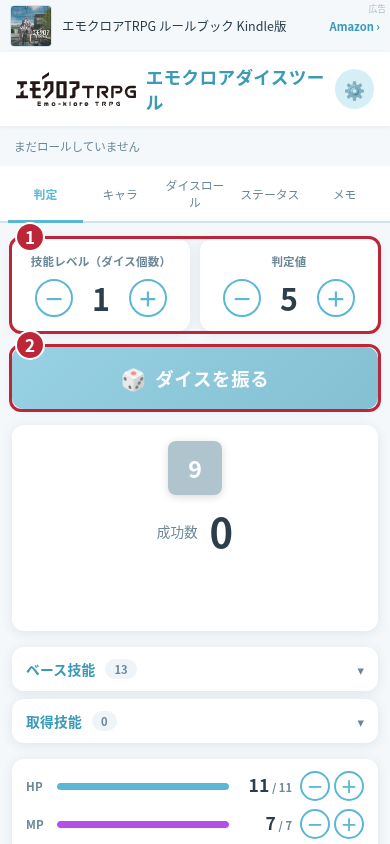
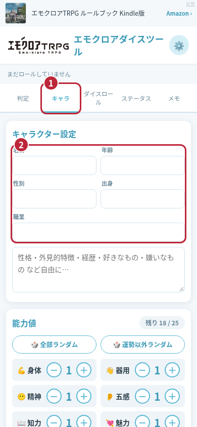
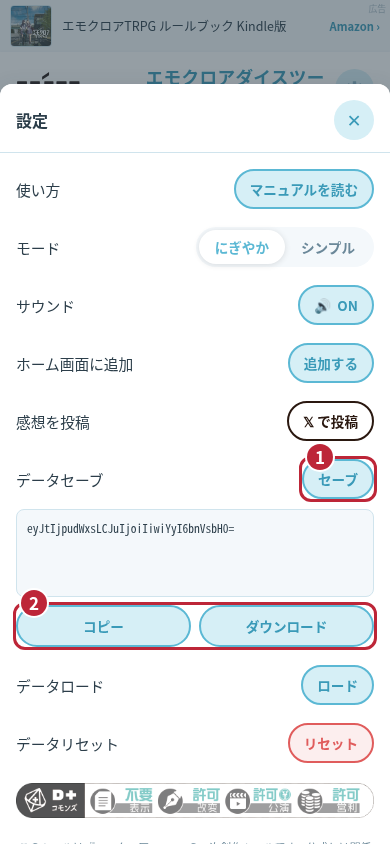
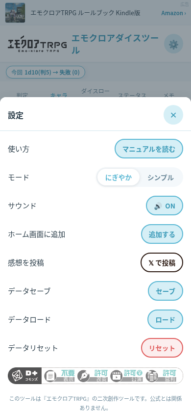

まずは判定してみよう
このツールはエモクロアTRPGの D10（10面ダイス）判定、キャラクター作成、ステータス管理をブラウザで行える非公式ツールです。登録は不要です。ルールの詳細や判定値は公式ルールブック・DL（ディーラー）の指示をご確認ください。
- ツールの「判定」タブを開きます。
- 「ダイス数」と「判定値」を ＋／－ で設定します。判定値は 1〜10 で指定できます。
- 「ダイスを振る」をタップすると、出目・成功数・結果が表示されます。画面上部にはロール履歴が残ります。

画像をタップすると拡大できます。赤い番号と枠は説明用です。画面はスマホ表示の例です。
「キャラ」：キャラクターを準備する
名前・年齢・職業などのプロフィールと自由記述、能力値、技能、共鳴感情（表・裏・ルーツ）を入力できます。能力値・技能の残りポイントを確認しながら設定してください。「全部ランダム」「運勢以外ランダム」「技能をランダムに取得」も利用できます。
能力値を変更すると HP（身体＋10）・MP（精神＋知力）が再計算され、ステータスに反映されます。セッション途中で能力値を変更する際は、現在の HP・MP を確認してください。

画像をタップすると拡大できます。赤い番号と枠は説明用です。画面はスマホ表示の例です。
「判定」：技能判定と成功数の見方
ダイス数に応じた D10 を振り、各ダイスの出目を次のように集計します。出目 1 と 10 の扱いは判定値より優先されます。
- 出目 1：成功数 ＋2。
- 出目 10：成功数 −1。
- それ以外：判定値以下なら ＋1、判定値を超えたら 0。
例：判定値 5 で出目が「1・5・10」なら、2＋1−1＝成功数 2（ダブル）です。合計が負ならファンブル、0 は失敗、1 はシングル、2 はダブル、3 はトリプル、4〜9 はミラクル、10 以上はカタストロフと表示します。
「ベース技能」「取得技能」の一覧から技能を選んで判定することもできます。キャラの設定内容を確認してから利用してください。
「ダイスロール」：任意のダイスを振る
D2・D3・D4・D6・D10・D20・D100 のボタンから振りたいダイスを追加します。「D?」では 2〜9999 面のダイスを指定できます。追加したダイスを確認し、ロールボタンで振ってください。技能判定の成功数を出す場合は「判定」タブを使います。
「ステータス」「メモ」：セッション中の記録
「ステータス」で HP・MP の現在値／最大値、イニシアチブ、共鳴感情、∞共鳴レベルを管理します。HP・MP は数値欄に直接入力でき、＋／－ でも調整できます。「判定」タブにも一部のステータスが表示されます。
「メモ」には人物名・手掛かりなどを自由に記録できます。入力内容は同じ端末・ブラウザに自動保存されます。
右上の ⚙（設定）から「にぎやか」「シンプル」の表示モードとサウンド ON／OFF を切り替えられます。音を出せない場所ではサウンドを OFF にしてください。
保存・バックアップ・別端末への引き継ぎ
キャラ・ステータス・メモはブラウザ内に自動保存されます。アカウントによる同期はありません。判定のダイス数・判定値は再読み込みで初期値に戻ります。
- ⚙ →「データセーブ」の「セーブ」をタップします。
- 表示されたセーブコードを「コピー」して安全な場所に保管するか、「ダウンロード」でファイルに保存します。
- 引き継ぎ先の端末・ブラウザで ⚙ →「データロード」の「ロード」をタップします。
- 保存したコード（ファイルの場合は中の文字列）を貼り付け、「ロードする」をタップします。現在のデータは上書きされます。
セーブコードに含まれるのはキャラ・ステータス・メモです。ロール履歴や表示・サウンド設定は含まれません。コードは暗号化されていないため、個人情報やシナリオの秘密を含む場合は共有先に注意してください。
ブラウザのデータ削除・端末の変更などで自動保存データが失われる場合があります。大切なデータは定期的にセーブしてください。「リセット」はキャラ・ステータス・メモ・履歴を削除し、元に戻せません。

画像をタップすると拡大できます。赤い番号と枠は説明用です。画面はスマホ表示の例です。
スマホのホーム画面に追加する
スマホ・タブレットで右上の ⚙（設定）→「ホーム画面に追加」をタップすると案内が開きます。パソコンではこの項目は表示しません。対応ブラウザではインストール確認が表示されます。追加すると、専用のダイスアイコンから起動できます。
iPhone・iPad（Safari）
- Safari でツールのページを開き、共有ボタン（□↑）をタップします。共有はメニュー内にある場合もあります。
- 共有メニューをスクロールし、「ホーム画面に追加」を選びます。
- 「Web アプリとして開く」が表示されたらオンにし、「追加」をタップします。
Android（Chrome）
- Chrome でツールのページを開き、メニュー（⋮）をタップします。
- 「ホーム画面に追加」または「アプリをインストール」を選びます。
- 表示された確認画面で「追加」または「インストール」をタップします。
項目名や場所は OS・ブラウザによって異なります。SNS などのアプリ内ブラウザで項目が見つからない場合は、Safari／Chrome で開き直してください。パソコンでは Chrome／Edge のアドレスバーやメニューにインストール項目がある場合に利用できます。非対応の場合はブックマークをご利用ください。
追加前にデータセーブでバックアップを取ってください。通常のブラウザと追加後のアプリで保存領域が異なる場合は、データロードで引き継ぎます。ホーム画面への追加だけでオフライン利用が可能になるわけではありません。このツールはオフライン動作を保証していません。

画像をタップすると拡大できます。赤い番号と枠は説明用です。画面はスマホ表示の例です。
よくある質問
- Q. 公式のツールですか？
- A. 『エモクロアTRPG』の非公式の二次創作ツールです。ルールは公式ルールブックをご確認ください。
- Q. 音が出ません。
- A. 設定のサウンドが ON か確認し、一度画面をタップしてから振ってください。端末の音量・消音設定やブラウザの制限も確認してください。
- Q. 再読み込みするとデータが消えます。
- A. プライベートブラウズや保存を制限する設定では、データが保持されない場合があります。通常のブラウザで開き、データセーブも併用してください。ダイス数・判定値が初期値に戻るのは仕様です。
- Q. ホーム画面への追加ボタンが表示されません。
- A. パソコン、またはホーム画面からアプリとして起動中は追加案内を隠しています。ブラウザ側の追加項目が見つからない場合は、Safari／Chrome の通常のタブで開き直してください。
登録不要・インストール不要で今すぐ使えます
🎲 エモクロアダイスツールを使う